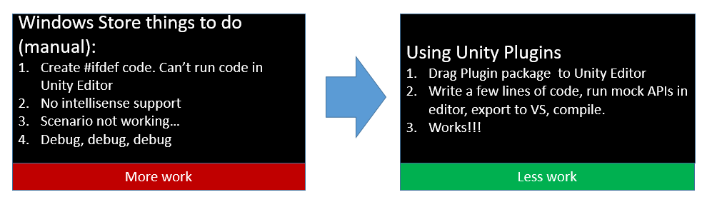
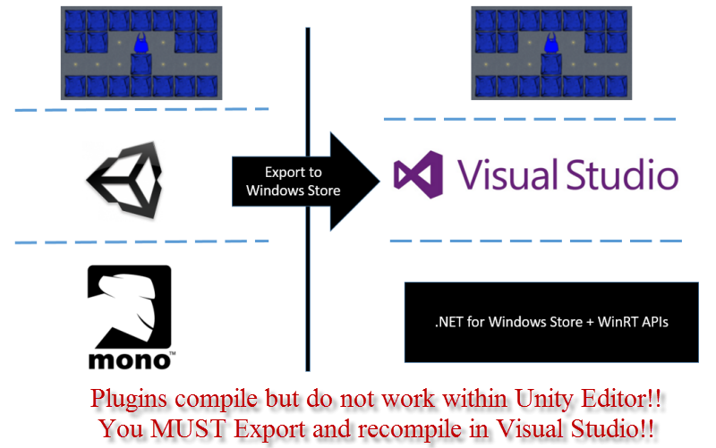
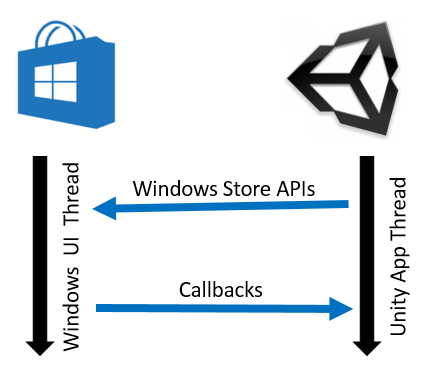

Welcome to Unity Plugins for Windows Store apps and Azure.
The plugins are in preview mode and we are taking feedback actively and iterating over them before a 1.0 release. Please let us know of any feedback by filing issues and features request on github. Of course, it would be awesome if you actually made a change and sent a pull request.
Unity Plugins for Windows Store Apps (Desktop and Phone) wrap Windows Store APIs in a convenient way for rapid game development. Although Windows Store APIs are fairly straight forward to use from a Windows Store app, things work slightly differently with Unity based games. The main reason is that a majority of the development happens in Unity Editor but the final testing can only be done when the app is running as a Windows Store app. Trying to do Windows Store integration within Unity is usually error prone. Following illustration might help understand the value of these plugins: 
When using plugins on Windows, it is important to understand that when you run your game/app within the editor, it uses open source Mono project as the underlying .NET platform. See the image below for illustration. However, Windows Store and Windows Phone apps run on top of .NET for Windows Store and the WinRT APIs that are available only to Windows Store Apps. What this means is that the Plugins or even your games, when running within the Unity Editor CANNOT call WinRT APIs. To call Windows Store/WinRT APIs, you will have to export your game as a Windows Store project and then compile the exported project in Visual Studio.

Your game logic runs within the Unity thread and all of your code will run within the context of this thread. When your code calls Windows Store APIs by using the plugins, we need to run these Windows Store APIs on the Windows UI thread. Our code understands how to get a handle to the Windows UI thread but has no clue about the Unity app thread. So, you need to initialize the plugin code with this thread so that the calls can go back and forth between your game logic and Windows Store APIs. See illustration below:

Thus, Before you can use any of the plugins, you will have to register the Unity AppCallbacks with the plugin. To do this, first export your project (see illustration below) and then in the exported project, open App.xaml.cs. Finally, you should place the following line just after Window.Current.Activate() in InitializeUnity function in App.xaml.cs
Microsoft.UnityPlugins.Utils.Initialize((action) => AppCallbacks.Instance.InvokeOnAppThread(new AppCallbackItem(() => action()), false));Note: Windows Store APIs will work only when compiled and run as a Windows Store app. Even though the Unity Stubs are present and allow you to invoke the APIs within the Unity editor, none of the API calls are actually functional and will likely produce an error message or return an error. To actually use the APIs, you must export the project as a Universal Windows 10 XAML project.

At this point of time, your app should have everything setup correctly and your app should invoke Windows Store APIs without any issues. If you hit an issue, create an issue on github and we will get to it.